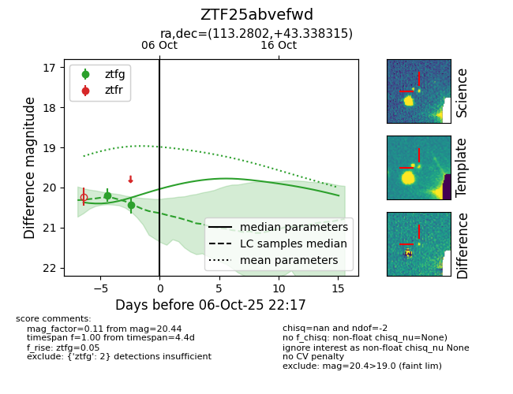
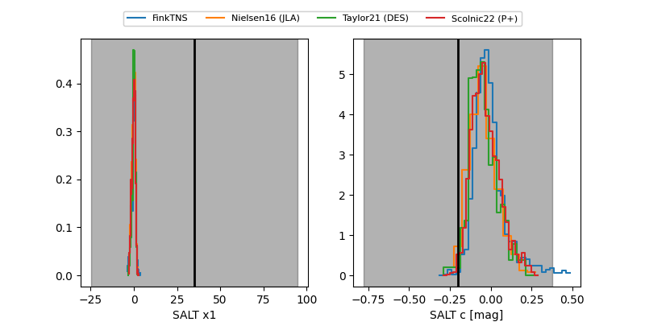

FINK: ZTF25abvefwd
Lasair: ZTF25abvefwd
ALeRCE: ZTF25abvefwd
ZTF25abvefwd (ztf,fink)
equatorial (ra, dec) = (113.2802,+43.33832)
galactic (l, b) = (175.3345,+25.46910)


last ztfg=20.44
2 ztfg detections